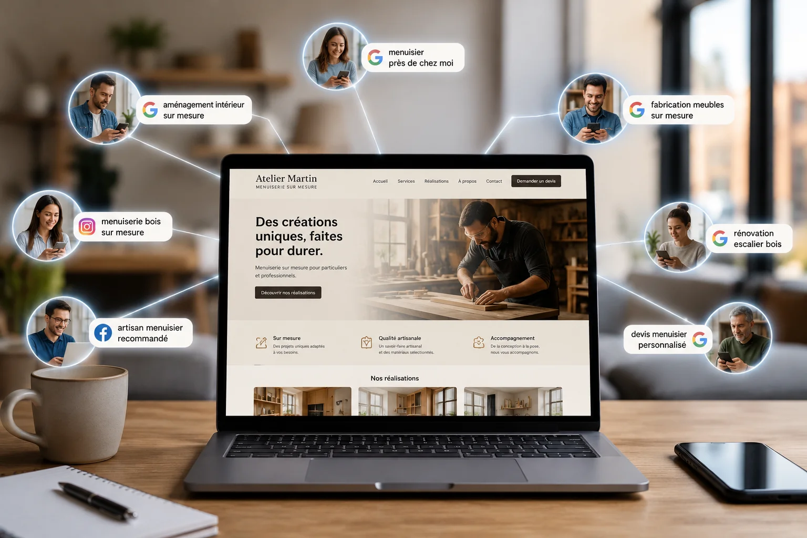

Par Central Web Agency · Mis à jour le

Un site professionnel permet à vos clients de vérifier ce que vous proposez et de vous joindre, qu’ils vous aient trouvé sur Google, sur un réseau social ou par une recommandation. Commencez par les questions qu’ils vous posent réellement avant de prendre contact.
Donnez les informations que vos clients cherchent
Présentez les prestations, la zone d’intervention, les horaires et le moyen de vous joindre. Selon votre métier, ajoutez une fourchette tarifaire, une galerie ou les conditions de rendez-vous. Ces informations permettent au lecteur de décider si votre offre correspond à son besoin.
Associez site, recommandations et réseaux sociaux
| Canal | Usage |
|---|---|
| Recommandations | Une personne transmet votre nom à un proche. Votre site lui permet ensuite de vérifier vos services et votre zone. |
| Réseaux sociaux | Une publication montre une réalisation ou une actualité et renvoie vers sa présentation ou vers vos coordonnées. |
| Site professionnel | Vos prestations, réponses pratiques et moyens de contact restent consultables au même endroit. |
Découvrez aussi comment encourager les recommandations de vos clients.
Facilitez le contact en dehors de vos horaires
Exemple illustratif. Une personne découvre votre activité sur Instagram un mercredi soir, vérifie votre zone sur le site et vous envoie une demande détaillée. Le site renseigne le visiteur pendant la fermeture. Vous traitez la demande à votre rythme selon votre organisation.
Choisissez un format adapté au besoin
Une landing page dès 450 € TTC chez CWA convient à une offre ou une campagne. Un site one-page dès 650 € TTC présente une activité sur une seule page. Une vitrine multipage dès 950 € TTC permet de détailler plusieurs prestations. Notre comparatif des formats de site aide à choisir.
La création est facturée séparément. Après livraison, la maintenance est facultative, dès 39 €/mois pour une vitrine ou 99 €/mois pour un site dynamique selon la formule.